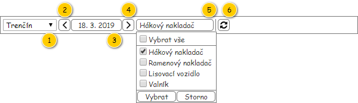
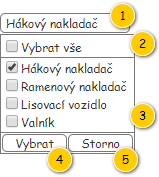
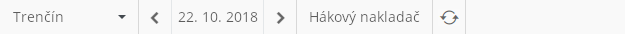

Nástrojová lišta slouží k nastavení parametrů pro monitoring realizace denních výkonů.

| Callout | Komponenta | Nadpis | Typ komponenty | Příklad hodnoty | Hodnota | Výchozí hodnota | Formát | Zpřístupněná | Viditelná | Chování | Validace | Poznámka |
|---|---|---|---|---|---|---|---|---|---|---|---|---|
| 1 | Vývěr provozovny | – | ComboBox | Trenčín | Entita Provozovna. Dostupné jsou takové Provozovny, které splňují zároveň všechny uvedené podmínky:
| První načtená Provozovna. | Vždy | Vždy | Změna parametrů monitoringu | – | Možnost nevybráno není k dispozici. | |
| 2 | Přesun na předchozí den | – | Button
| – | – | – | – | Vždy | Vždy | Provede změnu nastavení dne monitoringu realizace – posune zpět o 1 den. | – | Nepřímo vyvolá změnu parametrů monitoringu realizace – viz Změna parametrů monitoringu. |
| 3 | Výběr dne monitoringu realizace | – | Button | 18. 3. 2019 | Datum nastavené Systémem či Uživatelem. | Dnešní datum | Datum | Vždy | Vždy | Po stisknutí tlačítka se zobrazí nabídka pro výběr dne – viz Výběr dne. Jakmile uživatel potvrdí výběr, dojde k aktualizaci zobrazených dat – viz Změna parametrů monitoringu. | Není možné zadat datum v budoucnosti. | Vždy je nastaveno datum. |
| 4 | Přesun na následující den | – | Button
| – | – | – | – | Pokud je den monitoringu realizace (komponenta 3) nastaven na datum v minulosti. | Vždy | Provede změnu nastavení dne monitoringu realizace – posune dopředu o 1 den. | – | Nepřímo vyvolá změnu parametrů monitoringu realizace – viz Změna parametrů monitoringu. |
| 5 | Výběr typu dopravy | – | – | – | – | – | Vždy | Vždy | Po stisknutí tlačítka se zobrazí nabídka pro výběr Typu dopravy – viz Výběr typu dopravy. Jakmile uživatel potvrdí výběr, dojde k aktualizaci zobrazených dat – viz Změna parametrů monitoringu. | Musí být vybrán alespoň jeden Typ dopravy. | Je možné vybrat všechny dostupné Typy dopravy zároveň. | |
| 6 | Obnovit data | – | Button
| – | – | – | – | Vždy | Vždy | Načte aktuální data pro obrazovku. TODO: Přidat UC. | – | – |
Po změně jakéhokoliv z parametrů, který je možné v nástrojové liště nastavit, dojde k načtení obrazovky pro monitoring realizace denních výkonů. Vliv parametrů nástrojové lišty je popsán v jednotlivých ucelených částech zmíněné obrazovky.
V rámci výběru požadovaného období je možné zvolit právě jeden den. To je umožněno pomocí nabídky, která je vyvolána kliknutím na odpovídající tlačítko. Opětovným kliknutím na tlačítko, pokud je již nabídka zobrazena, dojde k zavření této nabídky – není nastaveno žádné datum.
Je použita nabídka pro výběr dne (viz Výběr dne), která se liší v uvedených ohledech:
V rámci výběru požadovaného Typu dopravy je možné zvolit jeden nebo více Typů dopravy. To je umožněno pomocí nabídky, která je vyvolána kliknutím na odpovídající tlačítko.
Poznámka: Nabídka pro výběr Typu dopravy vychází z rychlého rozšířeného filtru – viz .

| Callout | Komponenta | Typ komponenty | Příklad hodnoty | Hodnota | Formát | Zpřístupněná | Viditelná | Chování | Validace | Poznámka |
|---|---|---|---|---|---|---|---|---|---|---|
| 1 | Tlačítko pro výběr typu dopravy | Button | Háková nakladač, Ramenový nakladač | Kolekce v nabídce zvolených Typů dopravy. | Pokud jsou vybrány všechny nabízené položky:
Pokud je vybrána více než jedna položka:
Pokud je vybrána právě jedna položka: Případ, kdy není vybrána žádná z položek, nemůže nastat. | Vždy | Vždy | Pokud není zobrazena nabídka, stisknutím tlačítka dojde k její zobrazení. Pokud nabídka zobrazena je, stisknutí vyvolá zrušení nastaveného výběru – viz Zrušit zvolené položky (komponenta 5). | – | – |
| 2 | Vybrat vše | CheckBox | – | – | Zobrazen zástupný text: „Vybrat vše“. | Vždy | Vždy | Vybrat vše | – | – |
| 3 | Položky nabídky | CheckBox | Hákový nakladač | Kolekce: Takové hodnoty systémového číselníku s Typy dopravy, u kterých je hodnota atributu Je k dispozici nastavena na TRUE. | Vždy | Vždy | Položka filtru | Musí být zvolena alespoň jedna položka. | – | |
| 4 | Vybrat zvolené položky | Button | – | – | Zobrazen text: „Vybrat“. | Vždy | Vždy | Stisknutím tlačítka dojde k nastavení nově vybraných Typů dopravy. To vyvolá změnu parametrů monitoringu realizace – viz Změna parametrů monitoringu. | – | – |
| 5 | Zrušit zvolené položky | Button | – | – | Zobrazen text: „Storno“. | Vždy | Vždy | Stisknutím tlačítka dojde k přerušení nastavení nově vybraných Typů dopravy – je zachován původní stav jako při zobrazení nabídky. Není vyvolána změna parametrů monitoringu realizace. | – | – |
Poznámka: Ve výchozím stavu jsou označeny všechny dostupné položky v nabídce (jsou nastaveny na TRUE).

| Odkaz | Stručný popis změny/doplnění |
|---|---|
| Rozložení | Revize dostupných provozoven (naznačeno modře). |
| Odkaz | Stručný popis změny/doplnění |
|---|---|
| Výběr typu dopravy | Revize dostupných typů dopravy (naznačeno modře). |
| Odkaz | Stručný popis změny/doplnění |
|---|---|
| Rozložení | Aktualizován popis dostupných Provozoven v nástrojové liště (komponenta 1, naznačeno modře). |